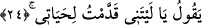

Bu ifâdede hazfedilmiş bir kısım olduğu da söylenmiştir. Yâni, bu hatırlamanın
faydası ona nereden gelecek! demek olur. Böylece âyette önce “öğüt alır” denilip sonra
bunun olmadığının belirtilmesi arasında görülen çelişki de ortadan kalkmış olur.
Öte yandan Allah Teâlâ “Fakat bu hatırlamanın ona ne faydası var?” buyurarak bu
hatırlamanın ve tevbenin fayda vermeyeceğini bildirdiğine göre Mutezile mezhebinin
iddiâ ettiği gibi Allah’ın tevbeleri kabul etmesinin üzerine vacib/zorunlu olmadığını
anlamış oluruz.
el-İrşad’da der ki: Mu‘tezile’nin iddiâ ettiği gibi akıl yoluyla dünya hayatında tevbeyi
kabul etmenin Allah’a vâcip olmadığına bu âyeti delil getirmek dayanaktan, temelden
yoksundur. Çünkü bu kimsenin hatırlaması/öğüt alması tevbe sayılmaz. Çünkü o kimse
tevbenin dünyada olduğunu bilir. Nitekim şu âyet de bunu ifâde etmektedir:
24. (İşte o zaman insan:) “Keşke bu hayatım için bir şeyler yapıp gönderseydim!”
der.
(İşte o zaman insan:) Ey hazırda bulunanlar! “Keşke bu hayatım için birşeyler yapıp
gönderseydim der.”
Sanki “İnsan yaptıklarını birer birer hatırlayınca ne der?” diye sorulmuş, cevap olarak
denilmiştir: İnsanoğlu bu hayatım için keşke bir şeyler yapıp gönderseydim. Yani
faydalı, devamlı ve kesiksiz bir hayat olan âhiret hayatını elde etmek için bugün
faydalanacak olduğum sâlih ameller yapıp gönderseydim, der.
Âyetin mânâsının “Keşke önceden beni azaptan kurtaracak amel yapıp gönderseydim,
şimdi burada dirilerden olurdum” şeklinde olması da mümkündür. Nitekim Allah Teâlâ
(cehennemlikler hakkında) “sonra o ateşte ne ölür ne de yaşar.” (el-A‘lâ, 87/13)
buyurmaktadır.
Bilesin ki hak ehli insanın iradesinin tümüyle elinden alınmış olduğunu söylemezler.
Şu halde bu temennîde -Mutezile mezhebinin iddiâ ettiği gibi- kulun fiillerinde bağımsız
olduğuna delâlet eden herhangi bir şey yoktur. Buna delâlet eden şey ancak kulun sâlih
amelleri yapıp önden gönderme imkanının olduğuna itikad etmekten ibarettir. Bunun sırf
Allah’ın kudreti ile olmasına ya da bu ameli kesbetme kudretini ona sarfettiğinde
Allah’ın yaratması meselesine gelince âyet bu hususlara delâlet etmemektedir. “İradesi
tamamıyle elinden alınmış kimse bu işi yapmasını sağlayacak ve kendisini muvaffak
kılacak birinin olmasını ister” sözü, gücünü fiilin iki tarafından birine sarf eden
kimsenin diğer taraftan irâdesinin elinden alınmış olduğuna inandığını vehmettirebilir.
Halbuki öyle değildir. Tam tersine herkes kesin olarak şuna inanır ki kul kudretini
ihtiyârî fiillerinden hangi tarafa yönlendirirse o meydana gelir. İşte mükellefiyet ve
sorumluluk bu noktada odaklanır.